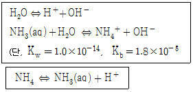
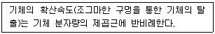
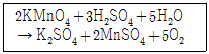
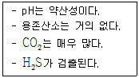
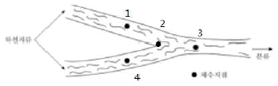
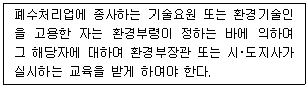
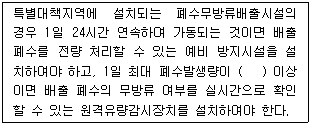
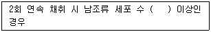

수질환경산업기사 (2019-04-27 기출문제)
1과목: 수질오염개론
1. 소수성 콜로이드 입자가 전기를 띠고 있는 것을 알아보기 위한 가장 적합한 실험은?
- 콜로이드 용액의 삼투압을 조사한다.
- 소량의 친수콜로이드를 가하여 보호작용을 조사한다.
- 전해질을 주입하여 응집 정도를 조사한다.
- 콜로이드 입자에 강한 빛을 쬐어 틴들현상을 조사한다.
(정답률: 75%)

2. 아래와 같은 반응이 있다. 다음 반응의 평형상수(K)는?

- 1.8 × 109
- 1.8 × 10-9
- 5.6 × 1010
- 5.6 × 10-10
(정답률: 61%)
3. Glucose(C6H12O6) 800 mg/L 용액을 호기성 처리 시 필요한 이론적 인(P)의 양(mg/L)은? (단, BOD5 : N : P = 100 : 5 : 1, K1 = 0.1day-1, 상용대수기준)
- 약 9.6
- 약 7.9
- 약 5.8
- 약 3.6
(정답률: 64%)
4. 적조 발생의 환경적 요인과 가장 거리가 먼 것은?
- 바다의 수온구조가 안정화되어 물의 수직적 성층이 이루어질 때
- 플랑크톤의 번식에 충분한 광량과 영양염류가 공급될 때
- 정체 수역의 염분 농도가 상승되었을 때
- 해저에 빈산소 수괴가 형성되어 포자의 발아 촉진이 일어나고 퇴적층에서 부영양화의 원인물질이 용출될 때
(정답률: 77%)
5. 다음에서 설명하는 기체 확산에 관한 법칙은?

- Dalton의 법칙
- Graham의 법칙
- Gay-Lussac의 법칙
- Charles의 법칙
(정답률: 72%)
6. 농업용수의 수질 평가 시 사용되는 SAR(Sodium Adsorption Ratio)산출식에 직접 관련된 원소로만 나열된 것은?
- K, Mg, Ca
- Mg, Ca, Fe
- Ca, Mg, Al
- Ca, Mg, Na
(정답률: 86%)
7. 빈영양호와 부영양호를 비교한 내용으로 옳지 않은 것은?
- 투명도 : 빈영양호는 5m이상으로 높으나 부영양호는 5m 이하로 낮다.
- 용존산소 : 빈영양호는 전층이 포화에 가까우나, 부영양호는 표수층은 포화이나 심수층은 크게 감소한다.
- 물의 색깔 : 빈영양호는 황색 또는 녹색이나 부영양호는 녹색 또는 남색을 띤다.
- 어류 : 빈영양호에는 냉수성인 송어, 황어 등이 있으나 부영양호에는 난수성인 잉어, 붕어 등이 있다.
(정답률: 65%)
8. K1(탈산소계수, base = 상용대수)가 0.1/day인 물질의 BOD5 = 400mg/L이고, COD = 800mg/L라면 NBDCOD(mg/L)는? (단, BDCOD = BODU)
- 215
- 235
- 255
- 275
(정답률: 74%)
9. BOD5가 213mg/L인 하수의 7일 동안 소모된 BOD(mg/L)는? (단, 탈산소계수 = 0.14/day)
- 238
- 248
- 258
- 268
(정답률: 70%)
10. [H+] = 5.0 × 10-6mol/L인 용액의 pH는?
- 5.0
- 5.3
- 5.6
- 5.9
(정답률: 75%)
11. 자연수 중 지하수의 경도가 높은 이유는 다음 중 주로 어떤 물질의 영향인가?
- NH3
- O2
- colloid
- CO2
(정답률: 72%)
12. PCB에 관한 설명으로 틀린 것은?
- 물에는 난용성이나 유기용제에 잘 녹는다.
- 화학적으로 불활성이고 절연성이 좋다.
- 만성 중독 증상으로 카네미유증이 대표적이다.
- 고온에서 대부분의 금속과 합금을 부식시킨다.
(정답률: 62%)
13. 하구의 물 이동에 관한 설명으로 옳은 것은?
- 해수는 담수보다 무겁기 때문에 하구에서는 수심에 따라 층을 형성하여 담수의 상부에 해수가 존재하는 경우도 있다.
- 혼합이 없고 단지 이류만 일어나는 하천에 염료를 순간적으로 방출하면 하류의 각 지점에서의 염료농도는 직사각형으로 표시된다.
- 강혼합형은 하상구배와 간만의 차가 커서 염수와 담수의 혼합이 심하고 수심방향에서 밀도차가 일어나서 결국 오염물질이 공해로 운반될 수도 있다.
- 조류의 간만에 의해 종방향에 따른 혼합이 중요하게 되는 경우도 있으며, 만조시에 바다 가까운 하구에서 때때로 역류가 일어나는 경우가 있다.
(정답률: 51%)
14. 수질항목 중 호수의 부영양화 판정기준이 아닌 것은?
- 인
- 질소
- 투명도
- 대장균
(정답률: 67%)
15. 다음 산화-환원 반응식에 대한 설명으로 옳은 것은?

- KMnO4는 환원되었고 H2O2는 산화되었다.
- KMnO4는 산화되었고 H2O2는 환원되었다.
- KMnO4는 환원제이고 H2O2는 산화제이다.
- KMnO4는 산화되었으므로 산화제이다.
(정답률: 65%)
16. 해수에 관한 설명으로 옳은 것은?
- 해수의 밀도는 담수보다 낮다.
- 염분 농도는 적도 해역보다 남･북 양극해역에서 다소 낮다.
- 해수의 Mg/Ca비는 담수의 Mg/Ca비보다 작다.
- 수심이 깊을수록 해수 주요 성분 농도비의 차이는 줄어든다.
(정답률: 69%)
17. 물의 동점성계수를 가장 알맞게 나타낸 것은?
- 전단력 τ과 점성계수 μ를 곱한 값이다.
- 전단력 τ과 밀도 ρ를 곱한 값이다.
- 점성계수 μ를 전단력 τ로 나눈 값이다.
- 점성계수 μ를 밀도 ρ로 나눈 값이다.
(정답률: 79%)
18. 우리나라의 물이용 형태로 볼 때 수요가 가장 많은 분야는?
- 공업용수
- 농업용수
- 유지용수
- 생활용수
(정답률: 85%)
19. 물의 일반적인 성질에 관한 설명으로 가장 거리가 먼 것은?
- 게면에 접하고 있는 물은 다른 분자를 쉽게 받아들이지 않으며, 온도 변화에 대해서 강한 저항성을 보인다.
- 전해질이 물에 쉽게 용해되는 것은 전해질을 구성하는 양이온보다 음이온간에 작용하는 쿨롱힘이 공기 중에 비해 크기 때문이다.
- 물분자의 최외각에는 결합전자쌍과 비결합전자쌍이 있는데 반발력은 비결합전자쌍이 결합전자쌍보다 강하다.
- 물은 작은 분자임에도 불구하고 큰 쌍극자 모멘트를 가지고 있다.
(정답률: 50%)
20. 여름철 부영양화된 호수나 저수지에서 다음과 같은 조건을 나타내는 수층으로 가장 적절한 것은?

- 성층
- 수온약층
- 심수층
- 혼합층
(정답률: 80%)
2과목: 수질오염방지기술
21. 토양처리 급속침투 시스템을 설계하여 1차 처리 유출수 100 L/sec를 160 m3/m2･년의 속도로 처리하고자 한다. 필요한 부지면적(ha)은? (단, 1일 24시간, 1년 365일로 환산한다.)
- 약 2
- 약 20
- 약 4
- 약 40
(정답률: 45%)
22. 물리화학적 처리방법 중 수중의 암모니아성 질소의 효과적인 제거방법으로 옳지 않은 것은?
- Alum 주입
- Break point 염소주입
- Zeolite 이용
- 탈기법 활용
(정답률: 62%)
23. 폭이 4.57m, 깊이가 9.14m, 길이가 61m인 분산 플러그 흐름 반응조의 유입유량은 10,600m3/day일 때, 분산수(d = D/vL)는? (단, 분산계수 D는 800m2/hr를 적용한다.)
- 4.32
- 3.54
- 2.63
- 1.24
(정답률: 39%)
24. 다음 물질들이 폐수 내에 혼합되어 있을 경우 이온 교환수지로 처리 시 일반적으로 제일 먼저 제거되는 것은?
- Ca++
- Mg++
- Na+
- H+
(정답률: 62%)
25. 폐수 발생원에 따른 특성에 관한 설명으로 옳지 않은 것은?
- 식품 : 고농도 유기물을 함유하고 있어 생물학적처리가 가능하다.
- 피혁 : 낮은 BOD 및 SS, n-Hexane 그리고 독성물질인 크롬이 함유되어 있다.
- 철강 : 코크스 공장에서는 시안, 암모니아, 페놀 등이 발생하여 그 처리가 문제된다.
- 도금 : 특정유해물질(Cr+6, CN-, Pb, Hg 등)이 발생하므로 그 대상에 따라 처리공법을 선정해야 한다.
(정답률: 59%)
26. 도금폐수 중의 CN을 알칼리 조건하에서 산화시키는데 필요한 약품은?
- 염화나트륨
- 소석회
- 아황산제이철
- 차아염소산나트륨
(정답률: 60%)
27. 생물학적 산화 시 암모늄이온이 1단계 분해에서 생성되는 것은?
- 질소가스
- 아질산이온
- 질산이온
- 아민
(정답률: 64%)
28. 활성슬러지법으로 운영되는 처리장에서 슬러지의 SVI가 100일 때 포기조 내의 MLSS농도를 2,500mg/L로 유지하기 위한 슬러지 반송률(%)은?
- 20
- 25.5
- 29.2
- 33.3
(정답률: 63%)
29. 슬러지 혐기성 소화 과정에서 발생 가능성이 가장 낮은 가스는?
- CH4
- CO2
- H2S
- SO2
(정답률: 55%)
30. 슬러지 개량을 행하는 주된 이유는?
- 탈수 특성을 좋게 하기 위해
- 고형화 특성을 좋게 하기 위해
- 탈취 특성을 좋게 하기 위해
- 살균 특성을 좋게 하기 위해
(정답률: 69%)
31. 1,000명의 인구세대를 가진 지역에서 폐수량이 800m3/day일 때 폐수의 BOD5농도(mg/L)는? (단, 1일 1인 BOD5오염부하 = 50g)
- 62.5
- 85.4
- 100
- 150
(정답률: 66%)
32. 하･폐수 처리의 근본적인 목적으로 가장 알맞은 것은?
- 질 좋은 상수원의 확보
- 공중보건 및 환경보호
- 미관 및 냄새 등 심미적 요소의 충족
- 수중생물의 보호
(정답률: 74%)
33. 포기조 내 MLSS농도가 3,200mg/L이고, 1L의 임호프콘에 30분간 침전시킨 후 부피가 400mL였을 때 SVI(Sludge Volume Index)는?
- 1⑤
- 125
- 143
- 157
(정답률: 67%)
34. 분뇨와 같은 고농도 유기폐수를 처리하는 데 적합한 최적 처리법은?
- 표준활성슬러지법
- 응집침전법
- 여과･흡착법
- 혐기성소화법
(정답률: 62%)
35. 하수관의 부식과 가장 관계가 깊은 것은?
- NH3 가스
- H2S 가스
- CO2 가스
- CH4 가스
(정답률: 76%)
36. 급속모래 여과장치에 있어서 수두손실에 영향을 미치는 인자로 가장 거리가 먼 것은?
- 여층의 두께
- 여과 속도
- 물의 점도
- 여과 면적
(정답률: 64%)
37. 슬러지 건조고형물 무게의 1/2이 유기물질, 1/2이 무기물질이며, 슬러지 함수율은 80%, 유기물질 비중은 1.0, 무기물질 비중은 2.5라면 슬러지 전체의 비중은?
- 1.025
- 1.046
- 1.064
- 1.087
(정답률: 44%)
38. 활성슬러지법에서 포기조 내 운전이 악화되었을 때 검토해야 할 사항과 거리가 먼 것은?
- 포기조 유입수의 유해성분 유무를 조사
- MLSS농도가 적정하게 유지되는가를 조사
- 포기조 유입수의 pH 변동 유무를 조사
- 유입 원폐수의 SS농도 변동 유무를 조사
(정답률: 46%)
39. 미생물 고정화를 위한 팰렛(Pellet)재료로서의 이상적인 요구조건에 해당되지 않는 것은?
- 기질, 산소의 투과성이 양호할 것
- 압축강도가 높을 것
- 암모니아 분배계수가 낮을 것
- 고정화 시 활성수율과 배양후의 활성이 높을 것
(정답률: 75%)
40. NH4+가 미생물에 의해 NO3- 로 산화될 때 pH의 변화는?
- 감소한다.
- 증가한다.
- 변화 없다.
- 증가하다 감소한다.
(정답률: 69%)
3과목: 수질오염공정시험방법
41. 온도에 대한 설명으로 옳은 것은?
- 상온 : 15 ~ 25℃
- 상온 : 20 ~ 30℃
- 실온 : 15 ~ 25℃
- 실온 : 20 ~ 30℃
(정답률: 70%)
42. 자외선/가시선 분광법으로 카드뮴을 정량할 때 쓰이는 시약과 그 용도가 잘못 짝지어진 것은?
- 질산-황산법 : 시료의 전처리
- 수산화나트륨용액 : 시료의 중화
- 디티존 : 시료의 중화
- 사염화탄소 : 추출용매
(정답률: 56%)
43. 이온크로마토그래피에서 분리칼럼으로부터 용리된 각 성분이 검출기에 들어가기 전에 용리액 자체의 전도도를 감소시키는 목적으로 사용되는 장치는?
- 액송펌프
- 제거장치
- 분리컬럼
- 보호컬럼
(정답률: 60%)
44. 관내에 압력이 존재하는 관수로 흐름에서의 관내 유량측정 방법이 아닌 것은?
- 벤튜리미터
- 오리피스
- 파샬플롬
- 자기식 유량측정기
(정답률: 61%)
45. 자외선/가시선 분광법을 적용하여 아연 측정 시 발색이 가장 잘 되는 pH 정도는?
- 4
- 9
- 11
- 12
(정답률: 64%)
46. Polyethylene 재질을 사용하여 시료를 보관할 수 있는 것은?
- 페놀류
- 유기인
- PCB
- 인산염인
(정답률: 42%)
47. 노말헥산 추출물질 측정에 관한 설명으로 틀린 것은?
- 폐수 중 비교적 휘발되지 않는 탄화수소, 탄화수소유도체, 그리스유상물질 및 광유류를 분석한다.
- 시료를 pH2 이하의 산성에서 노말헥산으로 추출한다.
- 시료용기는 유리병을 사용하여야 한다.
- 광유류의 양을 시험하고자 할 때에는 활성규산마그네슘 칼럼을 사용한다.
(정답률: 59%)
48. 시험에 적용되는 용어의 정의로 틀린 것은?
- 기밀용기 : 취급 또는 저장하는 동안에 밖으로부터의 공기 또는 다른 가스가 침입하지 아니하도록 내용물을 보호하는 용기를 말한다.
- 정밀히 단다：규정된 양의 시료를 취하여 화학저울 또는 미량저울로 칭량함을 말한다.
- 정확히 취하여 : 규정된 양의 액체를 부피피펫으로 눈금까지 취하는 것을 말한다.
- 감압：따로 규정이 없는 한 15 mmH2O 이하를 뜻한다.
(정답률: 82%)
49. 서로 관계 없는 것끼리 짝지어진 것은?
- BOD - 적정법
- PCB - 기체크로마토그래피
- F - 원자흡수분광광도법
- Cd - 자외선/가시선 분광법
(정답률: 59%)
50. 0.1 N NaOH의 표준용액(f ＝ 1.008) 30 mL를 완전히 반응시키는데 0.1 N H2C2O4 용액 30.12 mL를 소비했을 때 0.1 N H2C2O4 용액의 factor는 얼마인가?
- 1.004
- 1.012
- 0.996
- 0.992
(정답률: 62%)
51. 질소화합물의 측정방법이 알맞게 연결된 것은?
- 암모니아성 질소：환원 증류 킬달법(합산법)
- 아질산성 질소：자외선/가시선 분광법(인도페놀법)
- 질산성 질소：이온크로마토그래피법
- 총질소：자외선/가시선 분광법(디아조화법)
(정답률: 45%)
52. 사각 위어의 수두가 90cm, 위어의 절단폭이 4m라면 사각위에 의해 측정된 유량(m3/min)은? (단, 유량계수는 1.6, Q ＝K･b･h 3/2 )
- 5.46
- 6.97
- 7.24
- 8.78
(정답률: 64%)
53. 용액 500mL 속에 NaOH 2g이 녹아있을 때 용액의 규정 농도(N)는? (단, Na 원자량 = 23)
- 0.1
- 0.2
- 0.3
- 0.4
(정답률: 59%)
54. 자외선/가시선 분광법을 이용한 시험분석방법과 항목이 잘못 연결된 것은?
- 피리딘 피라졸론법: 시안
- 란탄알리자린콤프렉손법 : 불소
- 디에틸디티오카르바민산법 : 크롬
- 아스코빈산환원법: 총인
(정답률: 42%)
55. 공정시험기준에서 시료 내 인산염 인을 측정할 수 있는 시험방법은?
- 란탄알리자린콤프렉손법
- 아스코빈산환원법
- 디페닐카르바지드법
- 데발다합금 환원증류법
(정답률: 59%)
56. BOD시험에서 시료의 전처리를 필요로 하지 않는 시료는?
- 알칼리성 시료
- 잔류염소가 함유된 시료
- 용존산소가 과포화된 시료
- 유기물질을 함유한 시료
(정답률: 42%)
57. 수은을 냉증기-원자흡수분광광도법으로 측정하는 경우에 벤젠, 아세톤 등 휘발성 유기물질이 존재하게 되면 이들 물질 또한 동일한 파장에서 흡광도를 나타내기 때문에 측정을 방해한다. 이 물질들을 제거하기 위해 사용하는 시약은?
- 과망간산칼륨, 헥산
- 염산(1+9), 클로로포름
- 황산(1+9), 클로로포름
- 무수황산나트륨, 헥산
(정답률: 46%)
58. 하천수의 채수위치로 적합하지 않은 지점은?

- 1지점
- 2지점
- 3지점
- 4지점
(정답률: 81%)
59. 원자흡수분광광도법 광원으로 많이 사용되는 속빈 음극램프에 관한 설명으로 옳은 것은?
- 원자흡광 스펙트럼선의 선폭보다 좁은 선폭을 갖고 휘도가 낮은 스펙트럼을 방사한다.
- 원자흡광 스펙트럼선의 선폭보다 좁은 선폭을 갖고 휘도가 높은 스펙트럼을 방사한다.
- 원자흡광 스펙트럼선의 선폭보다 넓은 선폭을 갖고 휘도가 낮은 스펙트럼을 방사한다.
- 원자흡광 스펙트럼선의 선폭보다 넓은 선폭을 갖고 휘도가 높은 스펙트럼을 방사한다.
(정답률: 62%)
60. BOD 측정을 위한 전처리과정에서 용존산소가 과포화된 시료는 수온 23~25℃로 하여 몇분간 통기하고 20℃로 방냉하여 사용하는가?
- 15분
- 30분
- 45분
- 60분
(정답률: 53%)
4과목: 수질환경관계법규
61. 공공폐수처리시설의 방류수 수질기준으로 틀린 것은? (단, 적용기간 2013.1.1 이후 Ⅳ지역 기준이며, ( )안의 기준은 농공단지의 경우이다.)
- 부유물질량 : 10(10) mg/L 이하
- 총인 : 2(2) mg/L 이하
- 화학적 산소요구량 : 30(30) mg/L 이하
- 총질소 20(20) mg/L 이하
(정답률: 42%)
62. 환경기술인 등에 관한 교육을 설명한 것으로 옳지 않은 것은?
- 보수교육 : 최초 교육 후 3년마다 실시하는 교육
- 최초교육 : 최초로 업무에 종사한 날부터 1년 이내에 실시하는 교육
- 교육과정의 교육기간 : 5일 이상
- 교육기관 : 환경기술인은 환경보전협회, 기술요원은 국립환경인력개발원
(정답률: 70%)
63. 위임업무 보고사항 중 비점오염원의 설치신고 및 방지시설 설치 현황 및 행정처분 현황의 보고횟수 기준은?
- 연 1회
- 연 2회
- 연 4회
- 수시
(정답률: 64%)
64. 환경부장관이 수질 및 수생태계를 보전할 필요가 있다고 지정･고시하고 물환경을 정기적으로 조사･측정하여야 하는 호소의 기준으로 틀린 것은?
- 1일 30만톤 이상의 원수를 취수하는 호소
- 1일 50만톤 이상이 공공수역으로 배출되는 호소
- 동식물의 서식지･도래지이거나 생물다양성이 풍부하여 특별히 보전할 필요가 있다고 인정되는 호소
- 수질오염이 심하여 특별한 관리가 필요하다고 인정되는 호소
(정답률: 60%)
65. 낚시금지구역 또는 낚시제한구역 안내판의 규격 중 색상 기준으로 옳은 것은?
- 바탕색：녹색, 글씨：회색
- 바탕색：녹색, 글씨：흰색
- 바탕색：청색, 글씨：회색
- 바탕색：청색, 글씨：흰색
(정답률: 77%)
66. 1일 폐수 배출량이 750m3인 사업장의 분류기준에 해당하는 것은? (단, 기타 조건은 고려하지 않음)
- 2종 사업장
- 3종 사업장
- 4종 사업장
- 5종 사업장
(정답률: 71%)
67. 다음 규정을 위반하여 환경기술인 등의 교육을 받게 하지 아니한 자에 대한 과태료 처분 기준은?

- 100만원 이하의 과태료
- 200만원 이하의 과태료
- 300만원 이하의 과태료
- 500만원 이하의 과태료
(정답률: 69%)
68. 폐수무방류배출시설의 세부 설치기준에 관한 내용으로 ( )안에 옳은 내용은?

- 50세제곱미터
- 100세제곱미터
- 200세제곱미터
- 300세제곱미터
(정답률: 60%)
69. 폐수처리업의 등록기준에서 등록신청서를 시도지사에게 제출해야 할 때 폐수처리업의 등록 및 폐수배출시설의 설치에 관한 허가기관이나 신고기관이 같은 경우, 다음 중 반드시 제출해야 하는 것은?
- 사업계획서
- 폐수배출시설 및 수질오염방지시설의 설치명세서 및 그 도면
- 공정도 및 폐수배출배관도
- 폐수처리방법별 저장시설 설치명세서(폐수재이용업의 경우에는 폐수성상별 저장시설 설치명세서) 및 그 도면
(정답률: 52%)
70. 수질환경기준(하천) 중 사람의 건강보호를 위한 전수역에서 각 성분별 환경기준으로 맞지 않는 것은?
- 비소：0.⑤ mg/L 이하
- 납：0.⑤ mg/L 이하
- 6가크롬：0.⑤ mg/L 이하
- 수은：0.⑤ mg/L 이하
(정답률: 72%)
71. 배출부과금을 부과할 때 고려해야 할 사항이 아닌 것은?
- 배출허용기준 초과 여부
- 배출되는 수질오염물질의 종류
- 배출시설의 정상가동 여부
- 수질오염물질의 배출기간
(정답률: 65%)
72. 수질오염경보인 조류경보의 경보단계 중 '경계'의 발령･해제기준으로 ( )에 옳은 것은? (단, 상수원 구간)

- 1,000세포/mL 이상 10,000세포/mL 미만
- 10,000세포/mL 이상 1,000,000세포/mL 미만
- 1,000,000세포/mL 이상
- 1,000세포/mL 미만
(정답률: 57%)
73. 물환경보전법에서 사용하고 있는 용어의 정의와 가장 거리가 먼 것은?
- 점오염원이란 폐수배출시설, 하수발생시설, 축사 등으로서 관거(管渠)･수로 등을 통하여 일정한 지점으로 수질오염물질을 배출하는 배출원을 말한다.
- 비점오염원이란 도시, 도로, 농지, 산지, 공사장 등으로서 불특정 장소에서 불특정하게 수질오염물질을 배출하는 배출원을 말한다.
- 수면관리자란 다른 법령의 규정에 의하여 하천을 관리하는 자를 말한다.
- 불투수층이란 빗물 또는 눈 녹은 물 등이 지하로 스며들 수 없게 하는 아스팔트･콘크리트 등으로 포장된 도로, 주차장, 보도 등을 말한다.
(정답률: 64%)
74. 물환경보전법에서 정의하고 있는 수질오염방지시설 중 화학적 처리시설이 아닌 것은?
- 폭기시설
- 침전물개량시설
- 소각시설
- 살균시설
(정답률: 64%)
75. 비점오염저감시설 중 자연형 시설이 아닌 것은?
- 침투시설
- 식생형 시설
- 저류시설
- 와류형 시설
(정답률: 61%)
76. 상수원의 수질보전을 위해 국가 또는 지방자치단체는 비점오염저감시설을 설치하지 아니한 도로법 규정에 따른 도로 중 대통령령으로 정하는 도로가 다음 지역에 해당하는 경우는 비점오염저감시설을 설치해야 한다. 해당 지역이 아닌 것은?
- 상수원보호구역
- 비점오염저감계획에 포함된 수변구역
- 상수원보호구역으로 고시되지 아니한 지역의 경우에는 취수시설의 상류･하류일정 지역으로서의 환경부령으로 정하는 거리 내의 지역
- 상수원에 중대한 오염을 일으킬 수 있어 환경부령으로 정하는 지역
(정답률: 46%)
77. 국립환경과학원장이 설치･운영하는 측정망과 가장 거리가 먼 것은?
- 퇴적물 측정망
- 생물 측정망
- 공공수역 유해물질 측정망
- 기타오염원에서 배출되는 오염물질 측정망
(정답률: 52%)
78. 물환경보전법의 목적으로 가장 거리가 먼 것은?
- 수질오염으로 인한 국민의 건강과 환경상의 위해 예방
- 하천･호소 등 공공수역의 물 환경을 적정하게 관리･보전
- 국민으로 하여금 물환경 보전 혜택을 널리 향유할 수 있도록 함
- 수질환경을 적정하게 관리하여 양질의 상수원수를 보전
(정답률: 52%)
79. 폐수처리업의 등록기준 중 폐수수탁처리업에 해당하는 기준으로 바르지 않은 것은?
- 폐수저장시설은 폐수처리시설능력의 2.5배 이상을 저장할 수 있어야 한다.
- 폐수처리시설의 총 처리능력은 7.5m3/시간 이상이어야 한다.
- 폐수운반장비는 용량 2m3이상의 탱크로리, 1m3이상의 합성수지제 용기가 고정된 차량이어야 한다.
- 수질환경산업기사, 대기환경산업기사 또는 화공산업기사 1명 이상의 기술능력을 보유하여야 한다.
(정답률: 41%)
80. 비점오염저감시설 중 장치형 시설에 해당되는 것은?
- 여과형 시설
- 저류형 시설
- 식생형 시설
- 침투형 시설
(정답률: 73%)